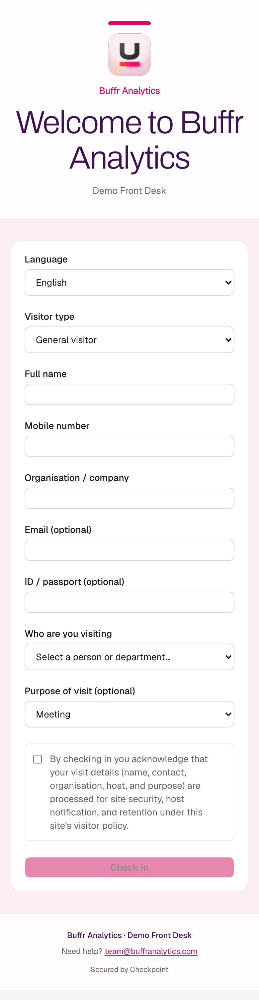

Product and Technical Specifications
What Checkpoint does at the front desk, how it is built, and how it protects guest information. The platform runs in production at buffrcheckpoint.com.
How a guest checks in

1. On the guest's own phone
The property prints its QR code and places it at reception. The guest scans it and fills in a short form in English, Afrikaans or Portuguese. No app, no account and no hardware for the property to buy.
2. With the receptionist
A guest without a smartphone, or who prefers help, checks in with the receptionist on a private screen. The record is as private as a self check-in.
3. At an optional self-service tablet
A property can place an Android tablet at reception. It shows the QR code and lets guests check themselves in without waiting for staff. The tablet keeps an encrypted copy of new check-ins through power and network outages and sends them on when the connection returns.
4. With a badge, for regular visitors
Contractors and staff who visit often can tap a near-field communication badge instead of filling in the form each time.
What happens next
The host is notified. Areas that need approval hold the guest until the host approves. Reception sees who is on the property at any moment, and the guest signs out on departure.
Capabilities
Our public status page reads from the same register the product uses.
| Capability | Status |
|---|---|
| QR code check-in on the guest's phone | Live |
| Receptionist-assisted check-in | Live |
| Pre-registration invitations by QR code | Live |
| Near-field communication badge check-in | Live |
| Optional self-service Android tablet with offline capture | Live |
| CiMSO INNterchange connection (arrivals from the property's booking system) | Live |
How it is built
| Layer | Technology |
|---|---|
| Self-service tablet | Native Android application written in Kotlin, with an encrypted on-device database (SQLCipher) and a queue that sends check-ins when the connection returns |
| Service | NestJS (TypeScript) application; every request is checked for the user's role, property and site |
| Web applications | Next.js for the public website, the guest check-in pages, the property's administration console and our internal operations console |
| Data | PostgreSQL, managed by Neon, with encrypted object storage for documents |
| Delivery | Railway for the service and Vercel for the web applications, with automatic encrypted connections |
How it protects guest information
| Control | What it means in practice |
|---|---|
| One record per guest | No guest can see another guest's details. There is no shared page. |
| Encryption | Information is encrypted in transit (TLS) and at rest, including on the tablet. |
| Role-based access | Staff see only the records their job needs, limited to their property and site. The service enforces access on every request. |
| Two-step sign-in | Property managers enrol an authenticator app. Our own staff sign in through a separate staff-only door where two-step sign-in is mandatory. |
| Support access by consent | Our staff can only look inside a property's account with that property's approval, for a limited time, and every action is logged. |
| Tamper-evident audit trail | Every sensitive view, export, correction and deletion is written to a hash-linked log that shows if an entry is altered. |
| Retention and privacy requests | Each property sets how long records are kept, can place legal holds, and handles guests' requests to see or delete their information. |
| Data minimisation | The form asks only for what the visit requires; identity number and email are optional unless the property needs them. |
| Per-site licensing and payment | A property goes live once its first payment is confirmed, and cannot add sites beyond its plan. |
Built for the Namibian front desk
- Works offline. The self-service tablet keeps recording through power and network outages. Messages to hosts are queued and sent when the connection returns.
- No smartphone required. Receptionist-assisted check-in is part of the product.
- The legal register, without the shared book. Each property configures its own check-in form in the form builder, so it can capture the particulars the guest register regulations require and meet its duty to the Namibia Tourism Board without exposing guests to one another (Regulations Relating to the Registration of Accommodation Establishments, 2004, reg. 29).
- Connects to existing booking software. The CiMSO INNterchange connection brings expected arrivals in as pre-registered guests, maps rooms to on-site zones, and logs every synchronisation.
- Ready for data protection law. Minimal collection, restricted access, retention rules and an audit trail are in place ahead of the Data Protection Bill becoming law (New Era, 2026).
Data analytics and reporting
Every check-in, sign-out and sensitive action is recorded as structured data, so reporting comes from the same records the desk already creates.
- Visit activity dashboard. Managers see daily check-ins and compliance events as a chart, per property and site.
- Site-manager reporting and audit export. Visit history, the guest register and audit evidence can be exported for auditors, insurers and head offices.
- Compliance dashboard and evidence packs on the Assure plan.
- Customer health scoring. Our operations console scores each property from 0 to 100 on a weighted scorecard of usage and engagement, flags churn risk early, and tracks platform-wide performance.
- Next: forecasting and tourism statistics. Combining check-in history with expected arrivals from CiMSO lets us forecast busy periods and staff the desk accordingly. Aggregated, anonymised arrival statistics by region and visitor type can feed the Namibia Tourism Board's tourism data management system without sharing any individual guest's details.
Quality and testing
A production check of the live service runs after every release and covers the service's health, the guest check-in form, the check-in and check-out pages, and rejection of wrong passwords. The full billing path (subscription with site count, invoice, invoice PDF and invoice email) was run end to end in production on 29 September 2026.
Abbreviations
| CC | Close corporation |
| Portable document format | |
| QR | Quick response (a scannable code) |
| TLS | Transport layer security (encryption of data in transit) |
References
New Era. (2026, January 27). Data legislations under final polishing. https://neweralive.na/data-legislations-under-final-polishing/
Regulations Relating to the Registration of Accommodation Establishments, Government Notice No. 139 of 2004, Government Gazette No. 3235 (2004) (Namibia). https://www.lac.org.na/laws/annoREG/Namibia%20Tourism%20Board%20Act%2021%20of%202000%20-%20Regulations%202004-139.pdf